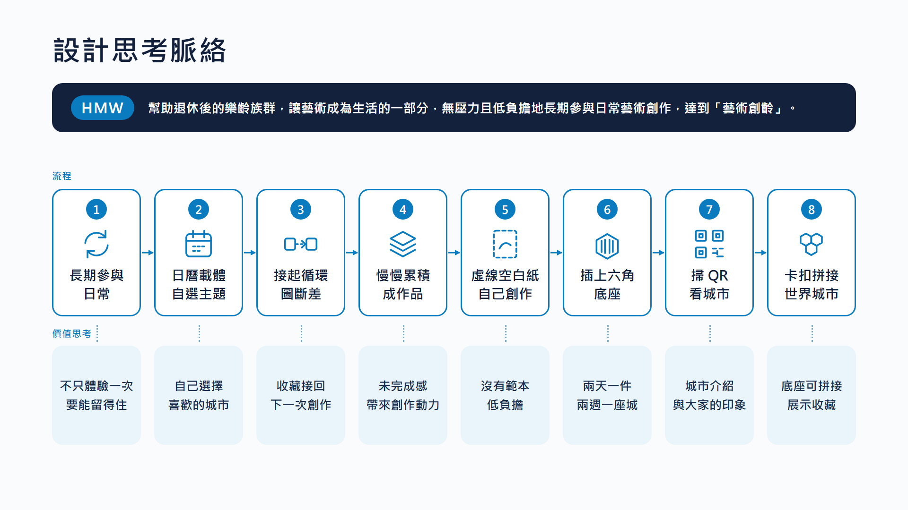
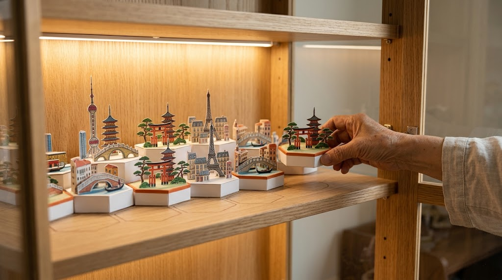
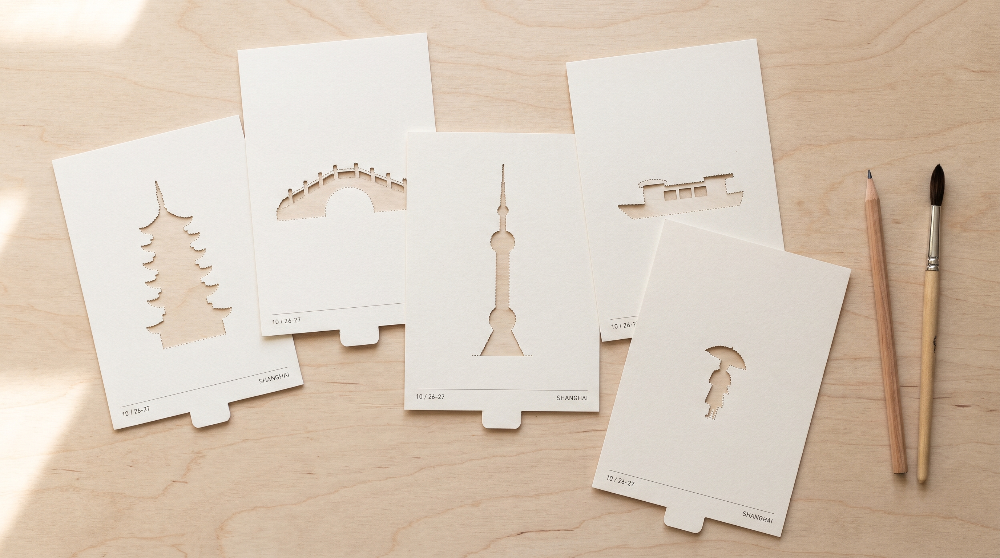
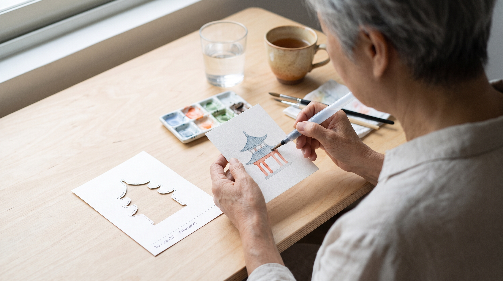
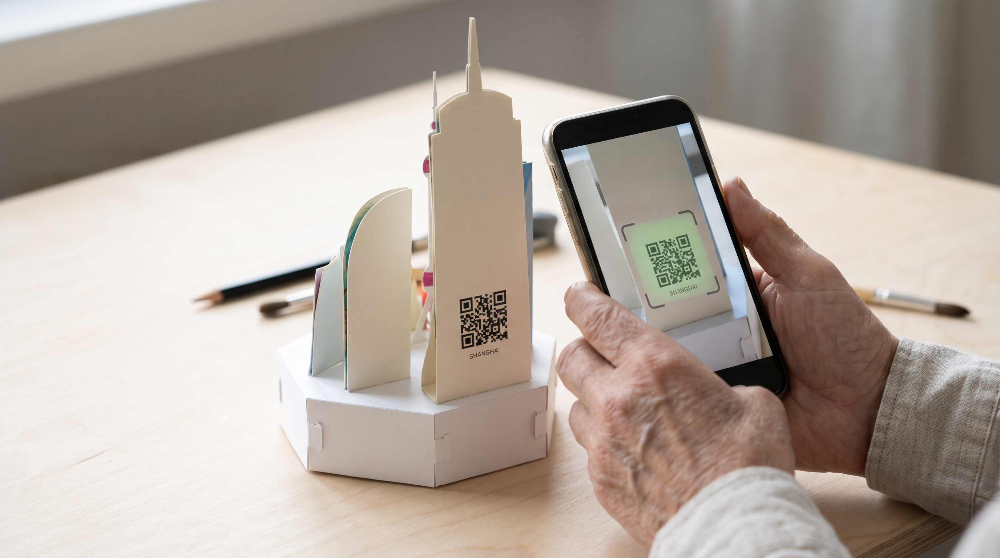
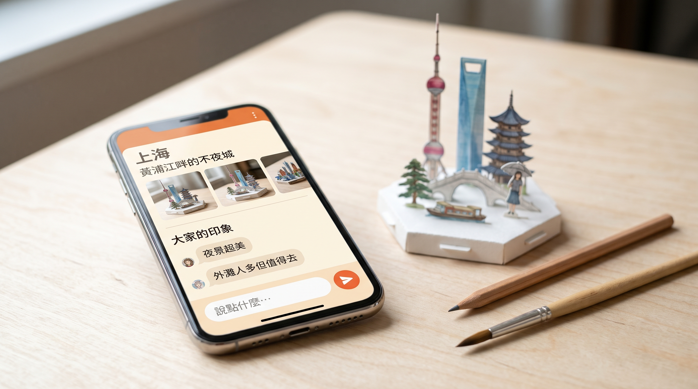

04 插上底座
七件插上底座，兩週一座小城市
自選主題日曆割下創作插上底座掃 QR收藏

未完成感長期參與
七件小零件插進六角紙底座
錯落立起，像一座迷你城市
小巧可愛，底座是紙做的


主題自己選：
世界最大城市、日本、
台灣、美國…
一座城市兩週，
拼成自己的世界
身體不一定能出國，
創作可以帶你去

每張月曆有一件形狀不同的小零件，沿虛線割下
紙是空白的，沒有範本
下方是日期與城市名

沿虛線割下零件
想怎麼畫都可以，不用照範本
兩天才一件，不用趕
七件小零件插進六角紙底座
錯落立起，像一座迷你城市
小巧可愛，底座是紙做的


掃一下，進入這座城市的頁面
去過的人留下印象，想去的人可以參考
留言、聊天，不只是作品分享
底座有小卡扣，
一座一座拼起來
擺在展示櫃，
一座城市緊鄰另一座
分出「去過」與「想去」，
空位就是下一座
兩天一件、兩週一座城。想去的城市就是下一次要畫的題材，不必重新決定畫什麼
沒有範本、不趕進度，兩天才完成一件，小巧的紙件拿得動、放得下
掃 QR 看城市介紹與大家的印象，去過的人分享、想去的人參考，作品也被看見
卡扣底座拼接，擺在展示櫃每天看得到；分出去過與想去，創作可以帶你去